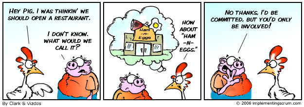
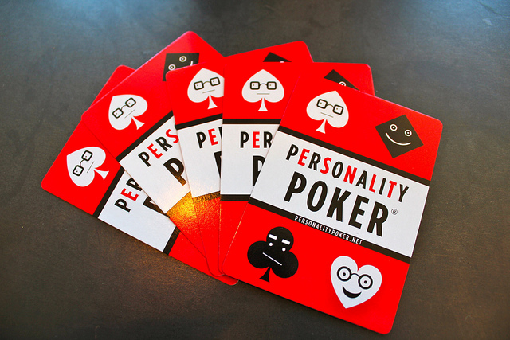

Der Mensch in artgerechter Haltung
FrOSCon, August 2013
Christoph Baudson
@sustainablepace
artgerecht.sustainablepace.net

Drei Softwareentwickler im Büro. A und B arbeiten, C kommt zu spät.
C! Du hast den Build kaputtgemacht!
Nichts Wildes...erst mal Kaffee.
Könnt ihr bitte leiser sein...
C kommt mit Kaffee zurück.
Ich repariers jetzt! (denkt: Du Tyrann)
Schon passiert! (denkt: Du Faulpelz)
(denkt: Ihr Störenfriede)
Der Mensch in artgerechter Haltung
- Es gibt verschiedene Menschenarten
- Diversität macht Sinn
- Wie werde ich der Art eines Menschen gerecht?
Disclaimer
All models are wrong *
* but some are useful
"The Big Durian"
Reaktion auf Konflikte
nach Karen Horney
- angreifen (drängeln)
- anpassen (folgen)
- zurückziehen (warten)
Jede Art hat eine eigene Stresskurve
Jede Art strebt zur Mitte ihrer Kurve
Drei Softwareentwickler im Büro. A und B arbeiten, C kommt zu spät.
C! Du hast den Build kaputtgemacht!
Nichts Wildes...erst mal Kaffee.
Könnt ihr bitte leiser sein...
Jede Philosophie hat ein "höchstes Gut"
- Aristipp → Lust (natürlich, "ich")
- Aristoteles → Tugendhaftigkeit (richtig, "man")
- Platon → Welt der Ideen (wahr, "im Prinzip")
Omnisophie und Popkultur

- Biene Maja = natürlich
- Schlümpfe = richtig
- Wickie = wahr
Omnisophie und Agile
- XP, Software Craftsmenship → natürlich
- Scrum-zertifiziert → richtig
- Agiles Manifest → wahr
Über Subkulturen und Teilkulturen
- Natürliche ~30%
- Richtige ~55%
- Wahre ~15%
Was bin ich?
|
|
Lebensenergie |
|
natürlich
|
|
|
richtig
|
|
|
wahr
|
|
|
|
|
| Liebesenergie |
|
C! Du hast den Build kaputtgemacht! ("Richtig")
Nichts Wildes...erst mal Kaffee. ("Natürlich")
Könnt ihr bitte leiser sein?! ("Wahr")
9 Typen des Enneagramms
|
Name |
Selbstverständnis |
| 1 |
Perfektionisten |
Recht haben |
| 2 |
Geber |
helfen |
| 3 |
Macher |
der Beste sein |
| 4 |
Romantiker |
anders sein |
| 5 |
Denker |
durchblicken |
| 6 |
Skeptische |
Pflicht erfüllen |
| 7 |
Genießer |
glücklich sein |
| 8 |
Anführer |
stark sein |
| 9 |
Friedliebende |
zufrieden sein |
|
|
Lebensenergie |
|
3
|
8
|
7
|
|
|
1
|
6
|
2
|
|
|
5
|
9
|
4
|
|
|
|
|
| Liebesenergie |
|
http://is.gd/enneagramm
Der Mensch in artgerechter Haltung
- Es gibt verschiedene Menschenarten
- Diversität macht Sinn
- Wie werde ich der Art eines Menschen gerecht?
"The Playing Card Tool for Driving High-Performance Teamwork and Innovation"

(Online-Variante: http://is.gd/ppoker)
Diversität macht Sinn
aka "The Person You Like the Least is the Person You Need the Most"
Der Mensch in artgerechter Haltung
- Es gibt verschiedene Menschenarten
- Diversität macht Sinn
- Wie werde ich der Art eines Menschen gerecht?
Pseudosinn, und wie Empathie ihm entgegenwirkt
Stresskurve
Pseudosinn
Eine übertriebene Strategie zur Stressbewältigung
Drei Softwareentwickler im Büro. A und B arbeiten, C kommt zu spät.
C! Du hast den Build kaputtgemacht!
Nichts Wildes...erst mal Kaffee.
Könnt ihr bitte leiser sein...
9 Typen des Enneagramms
|
Name |
Pseudosinn |
| 1 |
Perfektionisten |
Perfektion |
| 2 |
Geber |
Dank |
| 3 |
Macher |
Macht |
| 4 |
Romantiker |
Sinn |
| 5 |
Denker |
Allwissen |
| 6 |
Skeptische |
Autorität |
| 7 |
Genießer |
Lust |
| 8 |
Anführer |
Erfolg |
| 9 |
Friedliebende |
Harmonie |
Abwärtsspirale: Die Stresskurven werden immer enger!
Nur noch Perfektion
Nur noch Lust
Nur noch Harmonie
Mit Empathie Pseudosinn entgegenwirken
Empathie ist die Fähigkeit, Gedanken, Emotionen, Absichten und Persönlichkeitsmerkmale eines anderen Menschen zu erkennen und zu verstehen.
von Michael Sahota
☀
Aufmuntern
-- von Michael Sahota
- Perspektive wechseln
- Annehmen
- Empfinden
"Empathy means being open to feeling emotions we may not want to feel"
Sara Wachter-Boettcher
- Perspektive wechseln
- Annehmen
- Empfinden
- Verständnis ausdrücken
Mit Empathie Pseudosinn entgegenwirken
- Pseudosinn schmälert die Stresskurve
= weniger Leistung
- Empathie verbreitert die Stresskurve
= mehr Leistung
Drei Softwareentwickler im Büro. A und B arbeiten, C kommt zu spät.
Den kaputten Build hat B repariert.
Natürlicher Mensch
- Instinkt!
- Braucht Vorbilder, keine Regeln
- Hoher Energielevel, Dynamik, anfeuern
- Herausforderungen überwinden lassen, Toleranzen
- Gute Tools
Richtiger Mensch
- Verstand!
- Sicheren Platz im System finden
- Nicht überkonditionieren,
- Fehler verzeihen, Ängste nehmen
- Würde, Lob, Status
Wahrer Mensch
- Intuition!
- Verstehen, nicht loben
- Inspiration durch Mentor
- Wichtige Aufgaben, kein Multitasking
- Geduld
9 Typen des Enneagramms
|
Name |
artgerecht |
| 1 |
Perfektionisten |
Vorbild |
| 2 |
Geber |
Versorger |
| 3 |
Macher |
Großherziger Führer |
| 4 |
Romantiker |
Quell der Liebe |
| 5 |
Denker |
Quell der Weisheit |
| 6 |
Skeptische |
Bewahrer der Ordnung |
| 7 |
Genießer |
Quell der Freude |
| 8 |
Anführer |
Quell der Initiative |
| 9 |
Friedliebende |
Quell des Friedens |
Der Mensch in artgerechter Haltung
- Es gibt verschiedene Menschenarten
- Diversität macht Sinn
- Wie werde ich der Art eines Menschen gerecht?
The only thing you can change
http://mnmlist.com/small-changes/
You can’t change your entire life.
You can only change your next action.
You can’t change a relationship.
You can only change your next interaction.
You can’t change the past, or control the future.
You can only change what you’re doing right now.
You can’t change everything.
You can only change one, small thing. *
* And that’s all it takes
Der Mensch in artgerechter Haltung
FrOSCon, August 2013
Christoph Baudson
@sustainablepace
artgerecht.sustainablepace.net